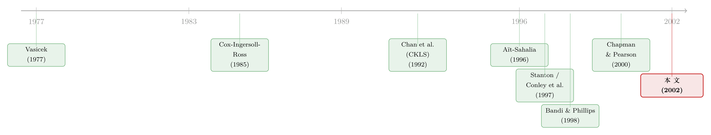

利率的漂移，到底有没有「拐弯」？——一把叫『局部时间』的尺子，重审一桩旧公案
本文读的是 Bandi (2002, Journal of Financial Economics)：作者用一套完全非参数、且不依赖平稳性的「空间」方法，重新估计了短期利率过程的漂移与扩散。结论出人意料——教科书里那个「线性均值回复」模型之所以被拒绝，并不是因为漂移在高利率处发生了非线性弯折，而是因为在 3% 到 15% 这一大段经验区间里，利率几乎就是一个鞅 (martingale)：漂移近乎为零。至于高利率处那段「拐弯」，因为样本几乎从未踏足，其统计含金量其实非常可疑。
1 引言：一桩被反复引用的「定论」
先说一个几乎所有学连续时间金融的人都知道的故事。
短期利率 \(r_t\) 是整个固定收益世界的地基：债券、利率衍生品的定价都从它出发，资产定价里的「超额收益」也都相对于它来定义。所以，给它的动态找一个对的模型，是一桩大生意。早年的做法很干净——把它写成一个线性均值回复 (linear mean reversion) 的扩散过程：利率高了就往下拉、低了就往上拽，拉力大小与偏离长期均值的距离成正比。Vasicek (1977)、Cox–Ingersoll–Ross (1985)、以及把它们统一进一个常弹性方差框架的 Chan, Karolyi, Longstaff and Sanders (1992)，讲的都是这一套。
可是，几乎所有人都拒绝了这套模型。Aït-Sahalia (1996b) 用半参数的方法逐一检验，把所有传统的单因子短率模型一个不剩地拒掉了。那么问题来了：到底是模型的哪一部分错了？
业界逐渐形成了一个相当流行的答案：错在漂移 (drift)。具体说，是漂移的非线性 (nonlinearity)——在利率很高的地方，回拉的力量不再是线性的，而是猛烈得多。利率越高，被拽回中枢的力气越大，于是这条非线性的强回复就成了「全局平稳性」的来源。Stanton (1997)、Conley et al. (1997)（后者讲的是「波动诱导的平稳性」）都在这条线上添砖加瓦。「短率漂移是非线性的」，俨然成了一条被反复引用的经验定论。
接着，一个自然的、但很少有人正面问的问题是：我们凭什么对「高利率处的漂移」如此自信？ 一个利率序列，绝大多数时间都待在 4%、5%、6% 这些「中间地带」，真正冲到 15% 以上的日子屈指可数。在那些几乎没有数据的角落里，非参数估计能告诉我们什么靠谱的东西吗？
Bandi (2002) 这篇文章，正是把这个被忽略的问题摆到了台面中央。而他用来回答它的工具，是一个在金融计量里当时还相当陌生的概念——局部时间 (local time)。
「漂移到底拐没拐弯」这桩公案，在这个博客里已经有好几篇相邻的文章在打：有人换了一把尺子去量短端（参见《利率会不会「拐弯」？》），有人怀疑那道弯是先验「替它弯」出来的（参见《利率会拐弯，是数据说的，还是先验替它弯的？》）。本文是这条线上方法论最「根上」的一篇。
2 一把新尺子：局部时间与「空间密度」
要理解这篇文章，得先理解作者为什么不愿意假设平稳性。
理由很实在：短率到底平不平稳，证据本身就是一笔糊涂账。单位根检验要么拒绝不了「非平稳」的原假设，要么结果就卡在拒绝门槛附近来回横跳。既然先验上说不清，那么一上来就假设平稳——这正是连续时间金融里为了凑出一套完整估计理论而惯常做的事——就有可能把不精确的推断，包装成看似确凿的结论。
于是 Bandi 做了一个关键的让步：他不假设平稳，只假设常返 (recurrence)。所谓常返，是要求过程的连续轨迹几乎必然地、无穷多次地造访它取值范围里的每一个集合。这比平稳弱得多（常返的过程不一定平稳），而且更符合直觉——我们确实预期利率会一次又一次回到它历史上待过的那些水平。
但放弃了平稳，传统的描述统计就失灵了：一个会四处漂移的非平稳序列，它的「样本均值」「样本方差」到底在描述什么？这里就要请出局部时间。
局部时间是什么？ 直觉上，它度量的是过程在某个点 \(a\) 附近「待了多久」。对一个连续半鞅 \(X_t\)，局部时间定义为（Definition 1, Eq. 1）：
$$L_X(t,a)=\lim_{\epsilon\to 0}\frac{1}{\epsilon}\int_0^t \mathbf{1}_{[a,a+\epsilon[}(X_s)\,d[X]_s$$
这里的时间是用二次变差 (quadratic variation) \([X]_t\) 来计量的——你可以把它理解成「信息累积量」。对一个扩散过程，\(d[X]_s=\sigma^2(X_s)\,ds\)，于是上式化为（Eq. 2）：
$$L_X(t,a)=\lim_{\epsilon\to 0}\frac{1}{\epsilon}\int_0^t \mathbf{1}_{[a,a+\epsilon[}(X_s)\,\sigma^2(X_s)\,ds$$
但这里掺进了波动率。如果我们想要的是「以真实时间计、过程在 \(a\) 附近待了多久」，就把它除掉 \(\sigma^2(a)\)，得到所谓时序局部时间 (chronological local time)（Eq. 3）：
$$\bar{L}_X(t,a)=\frac{1}{\sigma^2(a)}\,L_X(t,a)=\frac{1}{\sigma^2(a)}\lim_{\epsilon\to 0}\frac{1}{\epsilon}\int_0^t \mathbf{1}_{[a,a+\epsilon[}(X_s)\,\sigma^2(X_s)\,ds$$
这一步是全文的「灵魂」所在。\(\bar{L}_X(t,a)\) 虽然本身是随机的，但它扮演的角色，恰恰是一个概率密度：它告诉你过程在空间上每一处的「密集程度」。平稳序列里，描述「过程喜欢待在哪」的是那条时不变的边际密度；而对一个可能非平稳的序列，能担起这个职责的，就是局部时间所定义的空间密度 (spatial density)。
有了空间密度，自然还能定义空间风险率 (spatial hazard rate)（Eq. 4）：
$$\bar{H}_X(t,a)=\frac{\bar{L}_X(t,a)}{\int_a^{\infty}\bar{L}_X(t,s)\,ds}$$
它的含义和普通风险率一模一样：在「利率至少有 \(a\) 这么高」的条件下，利率水平恰好落在 \(a\) 的条件风险。区别只在于，它是从空间密度、而不是从时不变的边际分布算出来的——所以哪怕序列非平稳，它依然有定义、依然能算。
到这里，作者其实已经悄悄把一整套「为非平稳序列量身定制的描述工具」搭好了。但真正的杀招，还在后面。
3 模型与识别：为什么「漂移」比「波动」难估得多
3.1 模型设定
利率过程被写成一个马尔可夫扩散（Eq. 5）：
$$dr_t=\mu(r_t)\,dt+\sigma(r_t)\,dB_t$$
其中 \(\{B_t\}\) 是标准布朗运动，\(\mu(\cdot)\) 是漂移（条件期望变化率），\(\sigma^2(\cdot)\) 是扩散（条件方差变化率）。整个随机微分方程，由这两个函数完全刻画。Bandi 的目标，就是把这两个函数在每一个利率水平上非参数地估出来，既不预设线性、也不预设任何参数形式。
3.2 两种渐近，两种命运
接下来是这篇文章里我最喜欢的一段逻辑。要证明非参数估计量的相合性，连续时间里有两条路：
- 长跨度渐近 (long span asymptotics)：让观测的时间跨度 \(T\to\infty\)；
- 填充渐近 (infill asymptotics)：让采样越来越密，\(\Delta\to 0\)。
关键的事实是：扩散和漂移，对这两条路的依赖是不对称的。
扩散函数 \(\sigma^2(\cdot)\) 是个「局部」的量，靠的是高频信息。哪怕时间跨度固定，只要采样足够密，就能把它估出来（这一点 Florens-Zmirou (1993) 早有论证）。可漂移 \(\mu(\cdot)\) 不行。Bandi 用 Theorem 2.1 把这件事讲得很死：在一个固定的时间跨度 \([0,T^*]\) 上，无论你采样多密，下面这个最自然的漂移样本类比量
$$\hat{\mu}_{(n)}(r):=\frac{1}{\Delta_n}\cdot\frac{\sum_{i=1}^{n-1}\mathbf{1}_{\{|r_{i\Delta_n}-r| 不会收敛，反而以 \(\sqrt{h_n}\) 的速度发散。直觉上不难理解：漂移是「单位时间的期望漂移量」，可在一段固定的日历时间里，无论你把它切成多少小段，过程真正「往一个方向走了多远」的信息总量是有限的；把采样加密，分母（局部访问次数）涨了，但每一小步的漂移信号也按比例缩了，最后什么也榨不出来。 所以，要识别漂移，就非得让时间跨度 \(T\to\infty\) 不可——这正是「常返」假设要派的用场：让过程一遍遍回到每个水平，把关于漂移的信息一点点攒起来。Bandi 因此同时做了填充和长跨度渐近：\(n\to\infty\)、\(T\to\infty\)、\(\Delta_{n,T}=T/n\to 0\)。 把 Bandi–Phillips (1998) 的渐近理论搬过来，扩散和漂移估计量都相合、且渐近正态。但它们的标准化因子是随机的——里头赫然站着局部时间。 扩散估计量满足（Eq. 15）： $$\sqrt{\frac{\bar{L}_r(T,r)\,\varepsilon_{n,T}}{\Delta_{n,T}}}\,\big(\hat{\sigma}^2_{(n,T)}(r)-\sigma^2(r)\big)\;\Rightarrow\;N\!\big(0,\,2\sigma^4(r)\big)$$ 漂移估计量满足（Eq. 17）： $$\sqrt{\hat{\bar{L}}_r(T,r)\,\varepsilon_{n,T}}\,\big(\hat{\mu}_{(n,T)}(r)-\mu(r)\big)\;\Rightarrow\;N\!\big(0,\,\tfrac{1}{2}\sigma^2(r)\big)$$ 请盯着这个漂移的式子看一会儿。它就是整篇文章的「核心方程」——所有的故事都从它里面长出来： 这个式子在说一件极其朴素、却被先前文献忽略的事：在某一点 \(r\) 上，漂移估得有多准，取决于局部时间 \(\hat{\bar{L}}_r(T,r)\) 有多大。局部时间大，意味着过程在 \(r\) 附近反反复复待过很久、访问过很多次，标准化因子 \(\sqrt{\hat{\bar{L}}_r\,\varepsilon_{n,T}}\) 就大，估计就紧致；局部时间小，意味着过程几乎没去过那里，估计就稀烂。 再对比一下两个收敛速度：扩散里除以了 \(\Delta_{n,T}\)（一个趋于零的量），漂移里没有。所以漂移估计量的收敛速度，天生比扩散慢一截。直白地说：波动率好估，漂移难估；而漂移在哪儿难估，要看过程在哪儿待得少。 这套「收敛速度由局部时间决定」的逻辑，把一句过去只能靠直觉嘟囔的话——「高利率处样本太少，别太当真」——升级成了一个可以写进定理、可以画出置信区间的命题。Bandi 还顺手给出了局部时间和空间风险率的渐近分布（Theorems 3.1、3.2）与 95% 置信区间，于是「这一点的推断可不可信」第一次有了刻度。 数据。 作者用的是年化的七天欧洲美元利率 (seven-day Eurodollar rate)，来自美国银行 (Bank of America)，日频，样本期从 1973 年 6 月 1 日到 1995 年 2 月 25 日。这套数据正是 Aït-Sahalia (1996a, b) 用过的那一套——这一点很重要，因为它让 Bandi 的结论可以和先前那条「漂移非线性」的文献直接对话。 把整套机器开动起来，结论可以浓缩成三句话： 第一，在 3% 到约 15% 这一大段区间里，估出来的漂移几乎就是零。 也就是说，在它绝大部分的经验取值范围内，短率的行为更像一个鞅——没有方向、没有回拉，下一刻的最优预测就是此刻的值。这与 Aït-Sahalia (1996b) 早先注意到的「漂移在某段范围内非常接近零」是一致的。 第二，非线性的均值回复，只出现在样本过程取值范围的最上沿。 漂移确实在高利率处开始猛烈地往下拉——这就是文献里那道著名的「弯」。但 Bandi 的框架立刻追问：那段区间的局部时间有多大？答案是：很小。样本几乎不去那里。按照 Eq. (17) 的逻辑，局部时间小 \(\Rightarrow\) 标准化因子小 \(\Rightarrow\) 那段漂移估计根本达不到统计相合。于是那道「弯」，与其说是一个被数据夯实的事实，不如说是少数几个边缘观测撑起来的、统计含金量可疑的形状。 第三，扩散函数在 3% 到 16% 之间，呈现出清晰的常弹性方差 (CEV) 形状。 波动率随利率水平上升而上升，这一块倒是结结实实地估了出来——正因为它是个「局部」的量，不靠常返、不靠高利率处的访问。 把这三句话拼起来，就是这篇文章对那桩公案的重新裁决：传统线性均值回复模型之所以被拒绝，主要矛盾不在「高利率处漂移非线性」，而在「中段漂移近乎为零（鞅性）」。 线性模型的设定要求漂移在中段就有一个可观的、与偏离成正比的回拉；可数据说，那里压根没有回拉。至于高处那道惊心动魄的弯，证据太薄，不足以作为拒绝线性模型的主要理由。 这正好呼应了 Chapman and Pearson (2000) 那个一针见血的标题——「短率的漂移真的是非线性的吗？」他们担心的，正是高利率处样本稀少导致的伪非线性；而 Bandi 用局部时间，把这份担心从「直觉怀疑」做成了「渐近理论」。Pritsker (1998) 早先也指出，Aït-Sahalia (1996b) 那套检验在有限样本里尺度失真、功效偏低——同一根软肋，被不同的人从不同角度反复戳中。 注意这里有一个常被误读的地方：Bandi 并没有断言「漂移在高处一定是线性的」或「一定没有非线性」。他说的是更克制、也更诚实的一句话：在那个区间，我们没有足够的信息下任何firm的结论。缺数据不等于「证伪了非线性」，它等于「这道题暂时无解」。 这条研究的演进，可以读成一部「假设越用越省、尺子越做越精」的历史。 起点是参数化的单因子模型。 Vasicek (1977) 给了线性高斯的均值回复，Cox–Ingersoll–Ross (1985) 给了带平方根扩散的版本（保证利率非负），Chan et al. (1992)（即 CKLS）把一票模型统一进常弹性方差的大框架里，用 GMM 做了横向比较。这一时期的共识是：模型要有明确的参数形式。 接着，非参数与半参数方法登场。 Aït-Sahalia (1996a, b) 是关键的转折点：他用边际密度的信息，半参数地检验并逐一拒绝了传统模型，并把焦点引向漂移的形状；Conley et al. (1997) 提出「波动诱导的平稳性」，Stanton (1997) 给了非参数的期限结构动态。一时间，「漂移非线性」「高处强回复」成了主流叙事。  然后，一股怀疑的暗流开始涌动。 Pritsker (1998) 指出这些检验在有限样本里的尺度与功效问题；Chapman and Pearson (2000) 直接质疑「非线性」是不是高利率处缺数据造出来的幻觉。而在方法论的根上，Florens-Zmirou (1993)、Jiang and Knight (1997) 探索了利用路径局部信息的估计，Merton (1980) 则早就点明：要稳健地识别漂移，必须靠不断拉长的时间跨度。 但真正关键的一步，是 Bandi and Phillips (1998) 那套不依赖平稳、只依赖常返的完全非参数扩散估计理论。 本文 (Bandi, 2002) 正是把这套理论落到短率数据上的实证应用——它用局部时间把「能不能信」变成了一个可量化的问题，从而给「漂移非线性」这桩公案做了一次冷静的复核。它所在的位置，是「方法论革新」与「实证翻案」的交汇点。 Q：「空间密度」和普通的概率密度，到底差在哪？ 普通的边际密度只在序列平稳、存在时不变分布时才有意义。空间密度（由局部时间定义）不需要这个前提：它直接度量过程在每个空间点附近"待了多久"，对可能非平稳的序列照样有定义。可以说它是边际密度在「放弃平稳性」之后的自然替身。 Q：放弃平稳、改用常返，是不是一种「偷懒」？ 恰恰相反，这是更诚实。短率到底平不平稳，单位根检验给不出干脆的答案。强行假设平稳，等于把一个未经检验的前提偷偷塞进结论里。常返比平稳弱得多，又符合「利率终会回到历史水平」的经济直觉，是更稳妥的起点。 Q：既然漂移这么难估，Bandi 凭什么相信自己估出来的「中段漂移≈0」？ 因为「中段」恰恰是局部时间最大的地方——过程一辈子大部分时间都待在 3%–15%。按 Eq. (17)，局部时间大则估计紧致。所以他对中段的鞅性有底气，对高处的非线性才打问号。结论的可信度，是被局部时间「分区」标定的。 Q：这是不是说 CIR、Vasicek 这些模型都该扔了？ 不必这么激进。本文说的是：拒绝它们的主要理由站不住——真正的矛盾在中段的零漂移，而不是高处的非线性。一个能在大部分区间产生近似鞅行为、又能容纳 CEV 形状波动率的设定，可能比「线性回拉」更贴合数据。这是建设性的批评，不是全盘否定。 Q：用日频数据去近似「填充渐近」（要求采样无穷密），靠谱吗？ 作者承认填充假设很苛刻，但引用了 Bandi–Nguyen (1999)、Jiang–Knight (1999) 的蒙特卡洛证据：对这类依赖高频采样的估计量，即便是日频也已是对密集采样的有效近似。这也是为什么本文敢用日度欧洲美元利率。（关于「多密才够」这个问题本身，可参见《一秒一笔的数据，为什么只敢拿 5 分钟用一次？》。） Q：扩散估得准、漂移估不准——这对债券定价意味着什么？ 在鞅定价（无套利）框架下，实际漂移对衍生品价格的直接作用有限；但漂移依然进入很多固定收益证券的估值，且决定了「真实测度」下的利率路径。漂移在高处的不确定，意味着任何重度依赖高利率情景的久期/凸性或压力测试，都该对那段外推保持戒心。 1. 把「局部时间」搬到公司债收益率/信用利差上。
【经济故事】信用利差同样疑似非平稳、且在「危机区间」取值极端而样本稀少——这正是局部时间最该发力的场景：它能告诉我们，对「危机水平利差」的均值回复估计，到底有几分可信。
【可行性】中。日频 TRACE/利差数据可得；难点在信用利差的跳跃与违约风险，纯扩散设定可能不够，需要扩展到带跳过程，识别会更费劲。 2. 用空间密度刻画「外资持有人」进出对利率/利差的非平稳冲击。
【经济故事】外资大幅进出会让某些利率/利差水平在特定时期被反复访问、又在另一些时期完全荒废——局部时间正好把这种"造访结构"画出来，比平稳框架下的描述统计更忠实。
【可行性】中偏低。需要把持有人结构与高频价格对齐，识别"外资冲击"本身就难；更现实的是先做描述性的空间密度刻画，作为后续因果设计的铺垫。 3. 给「漂移可信区间」做一张随时间滚动的热力图。
【经济故事】本文是静态地给出"哪段可信、哪段不可信"。但常返性与局部时间是会随样本累积变化的——把它做成滚动窗口，可以直观看到"对哪段利率的漂移，我们越来越有把握/越来越没把握"。
【可行性】高。纯实证，数据与方法都是现成的，本质是把 Bandi 的置信区间（Eq. 25、26）按时间序列重画一遍。 4. 用同一把尺子，检验「波动诱导的平稳性」到底成不成立。
【经济故事】Conley et al. (1997) 主张靠递增的波动率（而非漂移）来导入平稳性。局部时间框架天然能区分"漂移回拉"与"波动外推"两种机制——可以正面检验哪一种才是短率不发散的真正原因。
【可行性】中。需要在高利率处同时精确估计漂移与扩散，而那恰是数据最薄的地方，结论可能依旧受制于样本稀疏——但这本身就是有价值的负面结果。 贡献。 这篇文章最漂亮的地方，不在于它估出了一条新的漂移曲线，而在于它把「我们对某点的估计能不能信」这件原本只能靠直觉的事，做成了一个可计算的量——局部时间。靠着它，作者把一桩流行的经验定论（短率漂移非线性）拆解成了两块：可信的中段鞅性，与可疑的高处非线性。这是一种典型的「用更干净的方法学，把旧争论重新称重」的工作，价值在长跑里会越来越显。它也提醒所有做非参数估计的人：估计量在数据稀疏处的表现，不是一个技术脚注，而常常是结论本身的命门。 对识别的担忧。 我有两点保留。其一，填充渐近要求 \(\Delta\to 0\)，而日频终究是离散的；尽管有蒙特卡洛背书，但样本期里利率制度的剧变（1979–1982 的货币实验）会不会污染"常返"这个核心假设，值得更细致地考察——一个在制度切换下未必反复回访同一水平的过程，常返性是打折扣的。其二，所有"可信/不可信"的裁决都系于局部时间估计本身的精度，而局部时间在高处也是估不准的——这里有一点"用一个估不准的量去判定另一个量估不估得准"的循环味道，虽然渐近上自洽，有限样本里的稳健性仍需更多检验。 后续想看到什么。 我最想看到的，是把这套空间方法从"描述"推向"定价"：如果中段确实是鞅、高处不可知，那么一个诚实的利率衍生品定价框架，应该如何显式地把"高利率情景的认知不确定性"计入价格？这会比单纯争论"漂移线不线性"更有实践意义。其次，把局部时间引入公司债与信用利差这类更非平稳、更稀疏的市场，可能比利率本身更能体现这把尺子的威力。3.3 核心：收敛速度，写在「局部时间」里
4 数据与发现：那道「弯」，其实站在沙地上
5 文献脉络
评论与延伸（Q&A + 研究方向）
(a) 几个可能的疑问
(b) 几个可能的研究问题与提案
我的判断
参考文献